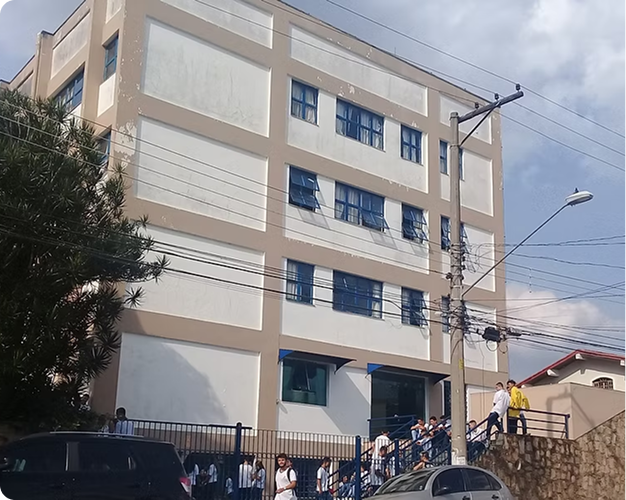

Conheca nossos cursos
Saiba mais sobre nossa Instituição
Fique por dentro de nossas novidades e muito mais
Orgulho que transforma...
...esforço que permanece.

Nossos alunos de Comunicação
Visual fizeram um projeto cheio de criatividade!

Confira um pouco da palestra
realizada pelo nosso ex-aluno
Brendow Mesquita!

Diversos cursos com a finalidade de dispertar seu dom escondido e preparar-te para o mercado de trabalho

Nossos cursos livres oferecem capacitação rápida e prática, para acelerar sua inserção e destaque no mercado de trabalho.

Oferecemos cursos de qualificação, unindo conhecimento prático e comportamental. Para o mercado de trabalho.

O CEDESP capacita pessoas em vulnerabilidade social, unindo ensino técnico e social para inserção no mercado de trabalho.


Frei Xavier Fornasiero, nascido em Milão, Itália, em 5 de agosto de 1930, dedicou sua vida à missão, à caridade e ao amor ao próximo. Em 1971, fundou o Instituto Nossa Senhora de Fátima, hoje conhecido como CEDESP Ave Maria ou “Escola do Frei”, na Zona Sul de São Paulo. Em 1994, criou a Escola Cristo Mestre, voltada para a formação de jovens para o mercado de trabalho.
Para manter os projetos sociais e educacionais, o Instituto também contou com uma padaria e uma gráfica como fontes de recursos. Seu legado de dedicação, perseverança e transformação social continua inspirando muitas pessoas até hoje